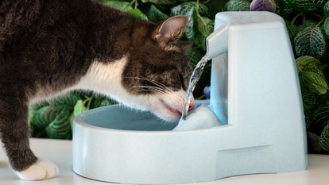

Guia para cuidar a tu gatito
Compartir la vida con un gatito puede ser muy agradable.
Si a esto le añadimos que cada vez se lleva una vida más ajetreada y que,
por lo general, requieren menos cuidados que los perros,
los gatitos se están convirtiendo cada vez más en la primera opción como animal de compañía.
Productos para gatitos
Cama
Todo gatito necesita su cama para poder descansar. Nada como un buen descanso después de un
arduo labor comiendo y durmiendo.
Cuenco de comida (siempre lleno)
Todo gatito necesita su cuenco de comida preferiblemente lleno. Si nos faltan 5 croquetas
nos daremos cuenta y empezaremos a maullar para exigir nuestro derecho a ser alimentados.

Dispensador de agua
Iugh... Agua...
Juguetes
Todo gatito necesita divertirse, se siente muy bien rasgar sillones o sillas comodas!
"Todo gatito debe ser tratado como un rey"
Definitivamente no fue un gatito
Aspectos clave para saber cómo cuidar a tu gatito
Jugar con tu gatito
Todo gatito merece divertirse, al hacerlo nos mantienes activos,
previniendo que nos pongamos gorditos.
Además de mejorar nuestro
estado de ánimo y estrés. Es muy difícil ser un gatito!
No es que yo sea uno, claro...
<!DOCTYPE html>
<html lang="en">
<head>
<meta charset="UTF-8">
<meta http-equiv="X-UA-Compatible" content="IE=edge">
<meta name="viewport" content="width=device-width, initial-scale=1.0">
<title>Hola amigos</title>
</head>
<body>
A los gatitos también nos gusta escribir codigo
</body>
</html>
Alimentación, la clave de toda buena salud
Todo gatito merece una buena alimentación, a diferencia de esos seres
infernales llamados perros, somos carnívoros estrictos, por lo que
requerimos una elevada cantidad de proteínas.
Vacunación y desparasitación para prevenir las enfermedades
Todo gatito merece ser vacunado y desparasitado, odiamos estar
enfermos, ya que no nos gusta demostrar debilidad, somos
fuertes guerreros!
Esterilización
No entiendo bien ese concepto, pero los humanos dicen que es
muy beneficioso para nosotros, debido a que previene enfermedades,
evita el cáncer de mama, evita tumores, entre otras cosas.
Hábitos de higiene básica
Todo gatito le encanta limpiarse por su cuenta, es muy cómodo
limpiarnos con nuestra propia lengua. Mas, los humanos también
tienen que poner de su parte, cepillandonos el pelaje para evitar
bolas de pelo o limpiarnos los dientes, eso no lo podemos hacerlo
con la lengua!
¿Cómo educar a tu gatito?
Es clave saber cómo educar o enseñar a un gatiito en diversos aspectos para que la convivencia en el hogar sea satisfactoria.
Estos son los puntos más importantes en la educación de un gatito.
La importancia del refuerzo positivo en gatitos
El refuerzo positivo es una forma de
condicionamiento que consiste en premiar al gatito cuando hace algo bien.
Las ventajas del refuerzo positivo en los gatitos son varias:
-
Mejor calidad y mayor velocidad de aprendizaje
-
Mayor estabilidad emocional
-
Mejor relación gato-cuidador
-
Mayor estimulación mental y física
Si tienes alguna pregunta escríbeme a :
valenzuelarodriguezj512@gmail.com
Ingresa a nuestro newsletter